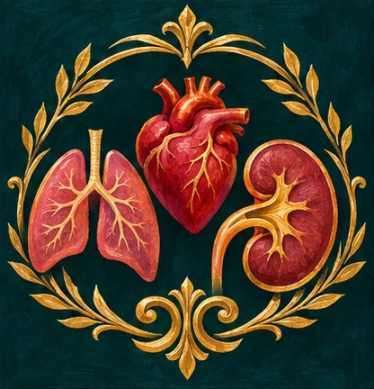
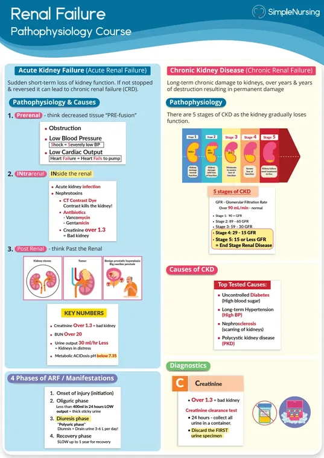
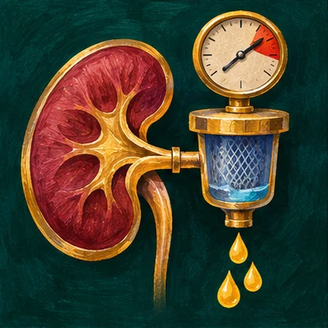
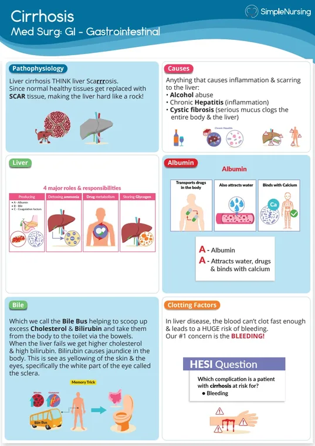
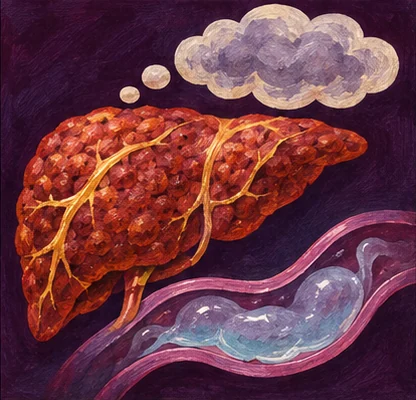

A catheterized patient’s urine output suddenly falls. What bedside check can reveal a reversible cause?
- Think…
- Check for kinks, dependent loops and signs of bladder distention while assessing perfusion.
NUR 198 · Exam 4 · Simple exam guide
Modules 9–10

Follow urine output and perfusion in kidney disease. In cirrhosis, bleeding or a change in mental status can alter the priority immediately.




C. Promptly report possible peritonitis and follow the sampling protocol.
Cloudy effluent with pain needs timely assessment and treatment.
A. Assess airway and circulation and activate urgent help.
Active bleeding may compromise circulation or airway protection.